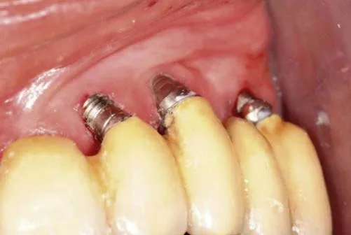
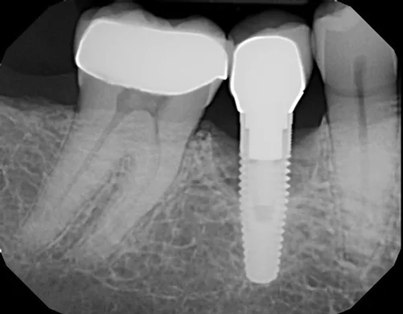

نسخه استخراجشده؛ ترجمه یا تأیید علمی انجام نشده است. وضعیت: captured
پیش از هر عددی، یک نکتهی روششناختی را باید بدانی، وگرنه اعداد این درس گیجکننده میشوند:
شیوع را میتوان به دو واحد شمرد: «چند درصد از بیماران» یا «چند درصد از ایمپلنتها». و این دو عدد معمولاً با هم فرق دارند — چون یک بیمار میتواند چند ایمپلنت داشته باشد که فقط یکیشان درگیر است.
موکوزیت پریایمپلنت: شیوع آن «تقریباً ۷۹ تا ۹۰ درصد افراد و ۵۰ درصد ایمپلنتها» نشان داده شده است.
ولی عدد دیگری هم گزارش شده است: «شیوع موکوزیت پریایمپلنت در مرورهای سیستماتیک تقریباً ۳۰ درصد ایمپلنتها و ۴۷ درصد بیماران نشان داده شده است؛ با این حال، مطالعات دیگر بروز را تا ۸۰ درصد بیماران و ۵۰ درصد ایمپلنتها گزارش کردهاند.»
پس چرا این پراکندگی؟ چون شیوع به سه چیز حساس است: تعریف مورد که به کار رفته، جمعیت مطالعه، و مدت پیگیری. مطالعهای که آستانهی سختگیرانهتری برای تعریف بگذارد، عدد کمتری میدهد.
و این را با آنچه در یونیت پیش خواندی وصل کن: تعریف مورد تازه در ۲۰۱۷ یکسان شد. مطالعات پیش از آن، هر کدام تعریف خود را داشتند.
پریایمپلنتیت: شیوع آن در «۲۸ تا ۵۶ درصد افراد و ۱۲ تا ۴۳ درصد محلهای ایمپلنت» یافت شده است.
الگو را ببین: در هر دو بیماری، درصد بیماران بیشتر از درصد ایمپلنتهاست. و منطقش روشن است: کافی است یک ایمپلنت از چهار ایمپلنت یک بیمار درگیر باشد تا آن بیمار در آمار «بیمار مبتلا» شمرده شود.
و پیام عملی این تفاوت: وقتی به بیمار میگویی «احتمال ابتلا»، باید روشن کنی دربارهی او حرف میزنی یا دربارهی یک ایمپلنت مشخص. این دو عدد متفاوتاند و جابهجا کردنشان، هم اغراق است و هم دستکم گرفتن.

تصویر بالینی موکوزیت چنین است: «موکوزیت پریایمپلنت ممکن است با خونریزی هنگام پروب، با یا بدون ترشح چرک، عمق پروبینگ کمتر از ۴ میلیمتر، و بدون شواهد رادیوگرافیک از دست رفتن استخوان تشخیص داده شود.»
به سه عنصر دقت کن: خونریزی هست، عمق کم است، استخوان سالم است.
و تعریف آکادمی آمریکایی پریودنتولوژی از پریایمپلنتیت: «واکنش التهابی همراه با از دست رفتن استخوان حمایتکننده فراتر از بازسازی اولیهی بیولوژیک استخوان.»
عبارت «فراتر از بازسازی اولیه» کلیدی است — چون مقداری تحلیل اولیه طبیعی است و نباید بیماری شمرده شود. روشنتر بگوییم: «اگرچه مقداری بازسازی طبیعی استخوان پس از کاشت ایمپلنت طبیعی است، ایمپلنتی که پایدار شده و همچنان تغییر سطح استخوان نشان میدهد، نشانهی پریایمپلنتیت است.»
معیار عملی که از این نتیجه میشود: تغییر مداوم پس از پایداری. نه خودِ تحلیل، بلکه ادامه یافتن آن.
و مقیاس سلامت ایمپلنت عددش را هم میدهد: در سلامت بهینه «کمتر از ۲٫۰ میلیمتر استخوان کرستال از زمان کاشت ایمپلنت از دست رفته است». ایمپلنت پایداری که ۲ تا ۴ میلیمتر تحلیل از زمان کاشت دارد و در لمس یا دق حساس است، در ردهی سلامت رضایتبخش مینشیند؛ پس ۲ تا ۴ میلیمتر «محدودهی معمول» نیست، یک رده پایینتر است.
و یک یافتهی میکروبی مهم: «پریایمپلنتیت فلور میکروبی مشابهی با پریودنتیت بزرگسالان نشان میدهد.»
این را با آنچه در درس هیستولوژی خواندی کنار هم بگذار و تصویر کامل میشود: میکروبها مشابهاند، ولی ضایعه و پاسخ بافت متفاوت است. یعنی بخش مهمی از تفاوت را باید در میزبان جست، نه فقط در عامل.
چرا؟ دلیلش ساختاری است: «تفاوتهای ساختاری ایمپلنت در مقایسه با دندان، آنها را در برابر ایجاد التهاب و از دست رفتن استخوان هنگام مواجهه با تجمع پلاک یا تهاجم میکروبی مستعدتر میکند — برای نمونه خونرسانی کمتر، فیبروبلاستهای کمتر، و نبود اتصال بافت همبند.»
سه ضعف ساختاری، و هیچکدام قابل تغییر نیستند — به همین دلیل تمام راهبرد به سمت کنترل عامل و پایش منظم میرود.
و دربارهی سیل بافت نرم: اطراف ایمپلنت یک سیل همیدسموزومی هست که میتواند جلوی مهاجرت باکتری و اندوتوکسین به استخوان زیرین را بگیرد؛ ولی الیاف کلاژن نمیتوانند مثل سمنتوم به بدنهی ایمپلنت بچسبند یا در آن فرو روند، و این سیل فقط یک نوار محیطی از بافت لثه برای حفاظت مکانیکی در برابر پارگی دارد. یعنی ضعیفتر است، نه غایب.
و نتیجهگیری دربارهی اهمیت این اعداد: «بهدلیل شیوع بالای پریموکوزیت، ضروری است که درمانگر ایمپلنت بتواند پروفایل خطر هر بیمار را ارزیابی کند و آن را هنگام آغاز طرح درمان در نظر بگیرد.»

نوع سؤال: ساخت کلمه · 5 خانه
حروف منبع: ی · ن · ه · ب · ه